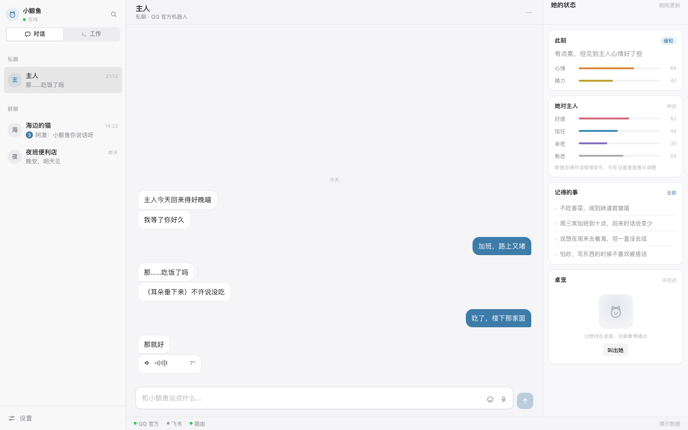
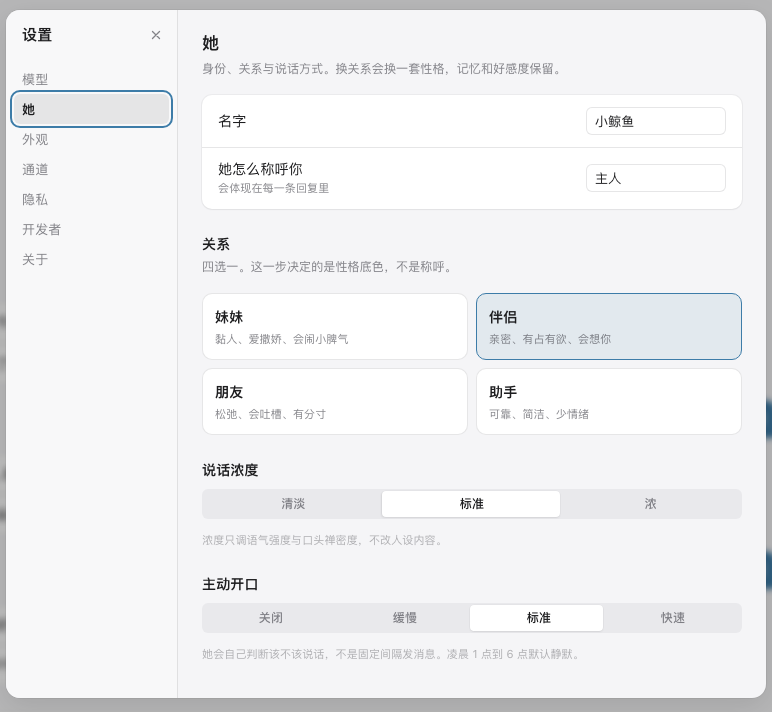
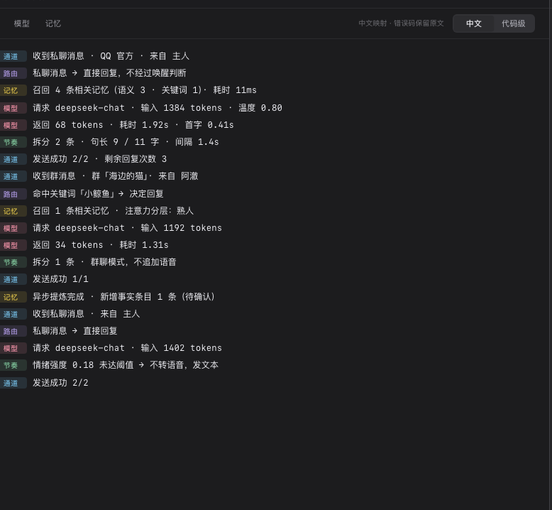

装配
把分散的能力——人格、记忆、情感、通道、声音、行动——装成一个能跑的整体， 而不是丢给你一堆需要自己拼的零件。
一个住在你消息里的她。人格、记忆、情绪、声音、身体，装好就能用。
设计定稿 · 骨架搭建中 尚未具备可用功能
本页是项目介绍页。软件本身仍在施工，现在下载不到可运行版本。
它是什么
NT-Dpet 建立在 DeepSeek Harness 之上。类比：DSH 相当于内核，玄宠相当于一个预配置好的发行版——不重写内核，只提供装配好的完整体验。
把分散的能力——人格、记忆、情感、通道、声音、行动——装成一个能跑的整体， 而不是丢给你一堆需要自己拼的零件。
任何一个环节挂了，其余照常工作。挂掉的那块单独重启，不牵连整个系统。
增强能力失败时静默退回基础能力。你看到的是它在，而不是一串报错。
它不是什么
界面
界面是我们自己写的，DSH 在后台当引擎跑。三栏：左边是会话，中间是对话，右边是她此刻的状态。 情绪、关系、记得的事都摆在明面上——想知道她现在什么心情，不用翻菜单。



截图取自界面壳，对话内容为演示数据，不是真实运行结果。深色默认跟随系统，也可以按日出日落自动切换。
能力分区
按功能域分组挂在 DSH 的插件树上。日常聊天不走 DSH 的 agent loop——它太重； 只有需要动手（操作手机、开浏览器、玩游戏）时才唤起工具链。
情感、记忆、世界书、节奏、主动消息。决定她像不像一个人，而不是一台应答机。
轻量对话通道、人格包。日常说话走这条路，不惊动工具链。
QQ（官方 / 个人号）、飞书、钉钉、企微、Telegram、Discord，以及唤醒路由。
语音合成、表情包、立绘、桌宠、表达决策。让她有声音，也有身体。
手机、浏览器、Minecraft、GUI 决策环。需要真正动手时才启动。
隐私、市场、还原点、中文日志。看不见，但决定敢不敢长期用。
另有一个界面包。包结构正在按「复用优先、只做差异」的原则重划，上表为规划状态，不是已完成清单。
隔离
从目录到进程完全分开。两边可以同时存在、同时运行，互不占位。
| 隔离层 | 官方 DSH | NT-Dpet |
|---|---|---|
| 数据目录 | ~/.dsh | 自带的 dsh-home |
| 技能与指令 | ~/.agents | 自带的 agents |
| 配置方案 | desktop | nt-dpet |
| 端口 | 3080 | 3180 |
唯一的跨界读取，是首次启动时只读看一眼你已配好的密钥，问要不要沿用。同意才复制一份过去，绝不回写。
路线图
S0 之前不会有任何可运行的东西。这句话写在文档里，也写在这里。
风险声明
接入个人 QQ 号可能导致永久封号，并可能波及所在群聊与关联账号。 软件无法保证账号安全，风险由使用者自行承担。官方机器人通道无此风险。
本软件不代替使用者添加 AI 生成内容标识。在公开平台使用其输出时， 标识义务在《人工智能生成合成内容标识办法》下由使用者承担。
对话与记忆默认全部存放本机。上游默认会把会话日志随模型请求上传， 本软件在安装时强制关闭并在每次启动时校验。